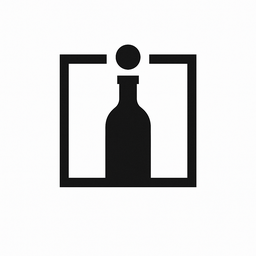

Inventory sync
Pull current bottles, SKUs, prices, and availability from the systems shops already use.

Wine GraphWine discoverability across retailers and producers
Wine Graph connects shop inventory and producer wine data into a shared graph, so real bottles on real shelves become easier to find across producer, wine, and local availability searches.
Currently, onboarding shops for inventory sync and matching.
Working with producers to make local wine inventory easier to discover.
Real inventory → producer verified → discoverable
Retailers bring real inventory. Producers bring canonical wine data. Wine Graph connects both.
What it does
Sync inventory from POS systems like Square and Clover
Match wines to a shared canonical graph maintained by producers
Make both inventory and producer data easier to discover
Product proof
Pull current bottles, SKUs, prices, and availability from the systems shops already use.
Resolve messy product names into cleaner canonical records for producers, wines, and vintages.
Connect searches for specific wines to local retailers that actually have them available.
Real inventory → matched → discoverable
Search: “2021 Ridge Geyserville” → Shows retailers that actually have it
Who it's for
Make the wines you already carry easier to find.
Wine Graph connects your POS inventory to a shared wine graph so your bottles show up when people
search for them.
Make your wines easier to find and understand.
Wine Graph connects your canonical wine data to real retailer inventory so buyers and drinkers can
see where your wines are actually available.
Demo
Or, feel free to call me, Paul, anytime at 1-303-520-7822